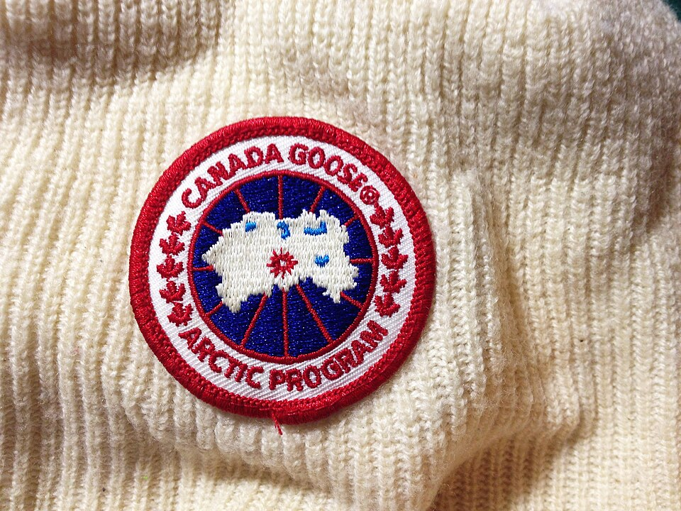

캐나다 구스 Canada Goose Inc.
캐나다 구스(Canada Goose Inc.)는 1957년 Sam Tick이 Metro Sportswear Ltd.라는 이름으로 설립한 캐나다의 겨울 의류 제조 지주회사이다. 본사는 토론토에 있다.
최종 업데이트

캐나다 구스는 어떤 브랜드인가
캐나다 구스(Canada Goose Inc.)는 겨울 의류 제조사들을 거느린 캐나다의 지주회사이다. 본사는 토론토에 있으며 CEO는 Dani Reiss이다.
초기에는 양모 조끼, 레인코트, 스노슈트를 만들었고, 이후 다운 충전 설비를 도입해 겨울 재킷 생산을 늘렸다. Dani Reiss가 CEO를 맡은 뒤에는 프라이빗 레이블 사업을 중단하고 소비자 제품 중심으로 방향을 바꿨다.
2017년 3월 16일 토론토 증권거래소와 뉴욕 증권거래소에 GOOS라는 종목 코드로 상장했다. 캐나다 안에 여러 생산 시설을 두고 미국과 중국에 매장을 열며 사업을 넓혔다.
캐나다 구스는 어떻게 시작되고 성장했나
1957년 폴란드계 유대인 이민자 Sam Tick이 Metro Sportswear를 세웠고, 이 회사가 훗날 캐나다 구스가 되었다. 첫 제품은 양모 조끼, 레인코트, 스노슈트였다.
1972년 사위 David Reiss가 합류해 다운 충전 기계를 들여오면서 겨울 재킷을 더 효율적으로 만들 수 있게 되었다. 1970년대 후반에는 Snow Goose 상표로 경찰, 교정 공무원, 공원 관리인 등에게 파카를 공급했다.
1982년 David Reiss가 CEO를 이어받았고 1985년 과반 지분을 인수해 사명을 Snow Goose로 바꿨으며, 2000년 아들 Dani Reiss의 주장으로 Canada Goose라는 이름이 되었다.
캐나다 구스의 브랜드 아이덴티티는 무엇인가
캐나다 안에서 제조를 이어 온 토론토 본사의 겨울 의류 회사로, 위탁 생산을 접고 파카 등 소비자 제품에 집중해 성장했다.
캐나다 구스의 대표 제품과 서비스는 무엇인가
초기 제품은 양모 조끼, 레인코트, 스노슈트였고, 다운 충전 설비를 도입한 뒤에는 겨울 재킷과 파카가 중심이 되었다. 1970년대 후반에는 Snow Goose 상표의 파카를 공공 부문 종사자에게 공급했고, L.L.Bean과 Eddie Bauer 같은 대형 의류 업체에 디자인을 판매했다.
Dani Reiss의 지휘 아래 프라이빗 레이블 사업을 중단하고 소비자 제품에 집중했다. 제품과 관련된 상표로 Arctic Program이 있으며, 2012년 1월 이 상표를 모방했다며 International Clothiers를 상대로 상표권 침해 소송을 냈고 같은 해 11월 합의에 이르렀다.
캐나다 구스는 지금 어떤 상태인가
2013년 12월 미국 사모펀드 Bain Capital이 지분 70퍼센트를 인수했고, 캐나다 내 제조를 유지한다는 약속이 거래에 포함되었다. 2017년 3월 토론토 증권거래소와 뉴욕 증권거래소에 상장했다.
2018년 12월 베이징에 매장을 열어 중국에 진출했고, 2019년 5월 몬트리올에 여덟 번째 캐나다 생산 시설을 열었다.
캐나다 구스 로고는 어떻게 변해왔나
자주 묻는 질문
캐나다 구스는 어느 나라 브랜드인가요?
캐나다 구스는 캐나다의 패션·럭셔리 브랜드입니다.
캐나다 구스는 언제 설립되었나요?
캐나다 구스는 1957년 설립되었습니다.
캐나다 구스의 브랜드 아이덴티티는 무엇인가요?
캐나다
캐나다 구스의 대표 제품은 무엇인가요?
초기 제품은 양모 조끼, 레인코트, 스노슈트였고, 다운 충전 설비를 도입한 뒤에는 겨울 재킷과 파카가 중심이 되었다.
캐나다 구스는 어느 기업이 소유하고 있나요?
2013년 12월 미국 사모펀드 Bain Capital이 지분 70퍼센트를 인수했고, 캐나다
캐나다 구스의 본사는 어디에 있나요?
캐나다 구스의 본사는 토론토에 있습니다(위키데이터 기준).
캐나다 구스의 공식 웹사이트는 어디인가요?
캐나다 구스의 공식 웹사이트는 http://fr.canada-goose.com 입니다.
출처와 검증
캐나다 구스 관련 참고: 공식 웹사이트 · 위키데이터 Q2988422 · 한국어 위키백과 · 영어 위키백과. 브랜드명은 한글과 원어를 함께 표기하되 데이터에 없는 표기는 만들지 않습니다. 기원 국가·설립연도는 검수된 정의문에서 확인된 값을 우선하고, 없을 때만 공식 웹사이트 URL이 일치하는 위키데이터 개체의 값을 씁니다. 웹 첫 보관은 인터넷 아카이브가 공식 사이트 첫 화면을 처음 보관한 날로, 사이트 개설일과 다를 수 있습니다. 위키데이터 값은 2026-11-07 기준입니다.